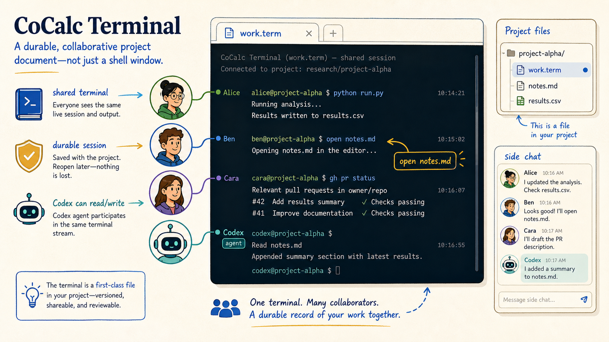
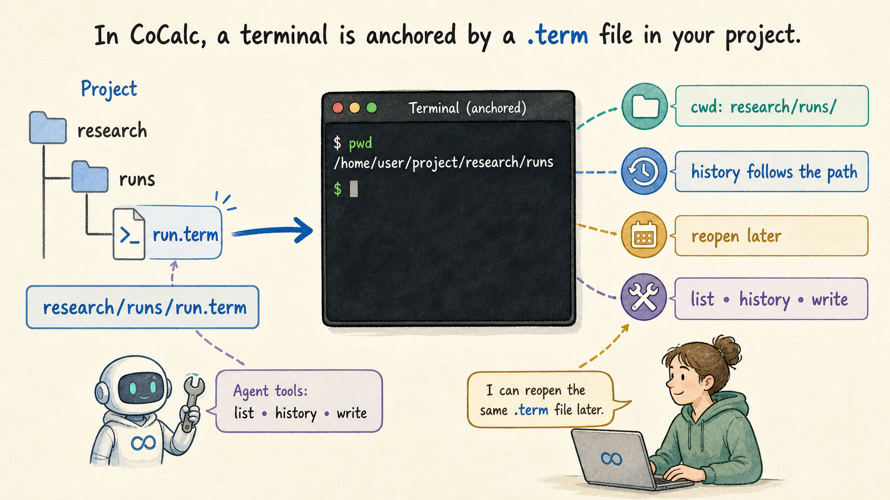
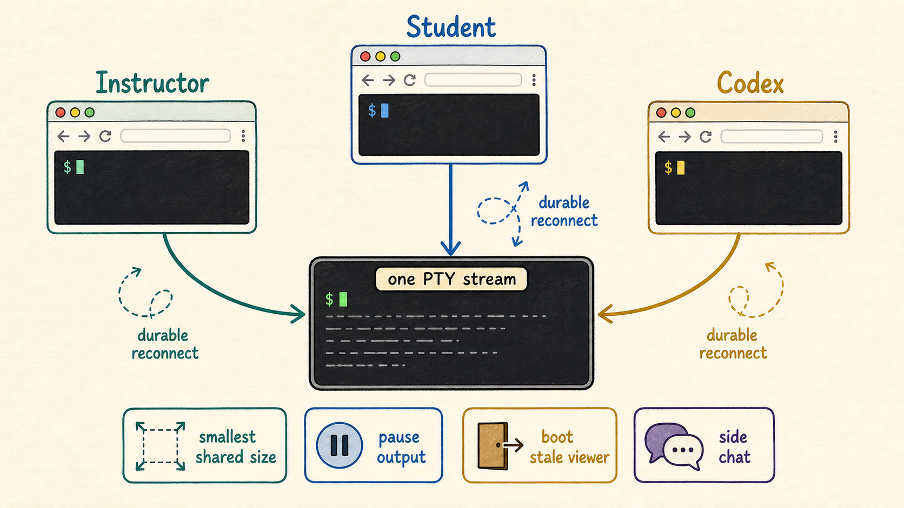

A CoCalc-AI field guide for terminal work
The CoCalc Terminal
CoCalc uses the familiar xterm.js terminal core, then turns a shell into something unusual: a durable, collaborative project document that humans and agents can reopen, inspect, split, discuss, and continue from the same place.

A normal terminal is local and private. A browser terminal is often just a remote shell in a web page. CoCalc's terminal is closer to a project artifact: it has a file name, a working directory, shared history, backend state, realtime collaborators, and agent-accessible tools.
That distinction matters when the terminal is part of research, teaching, debugging, installation, GitHub work, or long-running computation. The shell becomes part of the shared workspace instead of an invisible side channel.
Use the terminal without leaving the project
CoCalc terminals feel familiar because they use the same terminal engine people know from VS Code and many modern web shells. You get selectable color schemes, clickable links, normal shell behavior, package managers, SSH, scripts, compilers, Python, Git, and the rest of a Linux project environment.
The difference is the surrounding workspace. You can put a terminal next to a notebook, a LaTeX file, a markdown note, side chat, or a Codex thread. The command line is not separated from the documents it is helping to create.
Think of it as three tools at once
- A standard Linux terminal for commands and processes.
- A collaborative document that collaborators can reopen.
- A context source that Codex can inspect and act on.
A .term file gives the shell an address
In CoCalc, a terminal can be a file such as
research/runs/run.term. Opening that file starts the
shell in the containing directory, and reopening the same file gives
everyone a stable way to find the same terminal context later.
This is simple but important. A terminal anchored to a project path is easy to share, easy to restore, easy to place next to related files, and easy for an agent to identify precisely.

One terminal stream, many viewers
Multiple browsers and collaborators can open the same terminal and see the same live stream. The session continues when a browser tab closes, and a collaborator can reconnect later without asking someone to paste the missing output.
CoCalc also handles the awkward details of shared terminals: resizing to a common view, pausing output when it scrolls too fast, booting stale viewers when needed, and letting people discuss the terminal in side chat.

The agent loop is concrete, not magical
Codex can inspect terminal sessions, including scrollback and whether the session is still running.
The terminal output sits beside files, notebooks, Git state, and chat history, so debugging has real context.
With the CoCalc CLI, agents can send input to a live terminal when that is the right tool.
Durable sessions mean the work survives refreshes and browser disconnects.
Keep terminal work connected to the surrounding task
The open command turns terminal paths into project
tabs: open notes.md opens the file in the browser
workspace. Splits let you run a server, tail logs, edit a script,
and keep a Python REPL visible at the same time.
This makes the terminal a good fit for quick package installs, SSH, GitHub CLI work, teaching support, build logs, data cleanup, and the practical steps around notebooks and papers that are easier in a shell than in a menu.
Good terminal jobs in CoCalc
Install system packages, run a one-off script, connect to another machine, check a compiler error, manage a Git branch, inspect a large file, or let Codex automate the boring part while you watch the same session.
The backend does the durable work
The terminal session lives on the project backend, not in the
browser. CoCalc stores terminal history, tracks session state,
supports live inspection through
cocalc project terminal, and adapts buffering when a
command produces a large amount of output.
The goal is not to drop output to make the browser feel fast. The goal is to keep the stream manageable, apply real terminal backpressure, and preserve enough context that humans and agents can understand what happened.
A few commands an agent can use
cocalc project terminal list
cocalc project terminal history research/runs/run.term
cocalc project terminal cwd research/runs/run.term
cocalc project terminal write research/runs/run.term 'make test\n'The terminal becomes part of the record
CoCalc's terminal is still a shell. That is the point. But because it is addressable, collaborative, durable, and agent-aware, it can carry more of the real work of a project without becoming a private scratch pad that disappears when the browser tab closes.